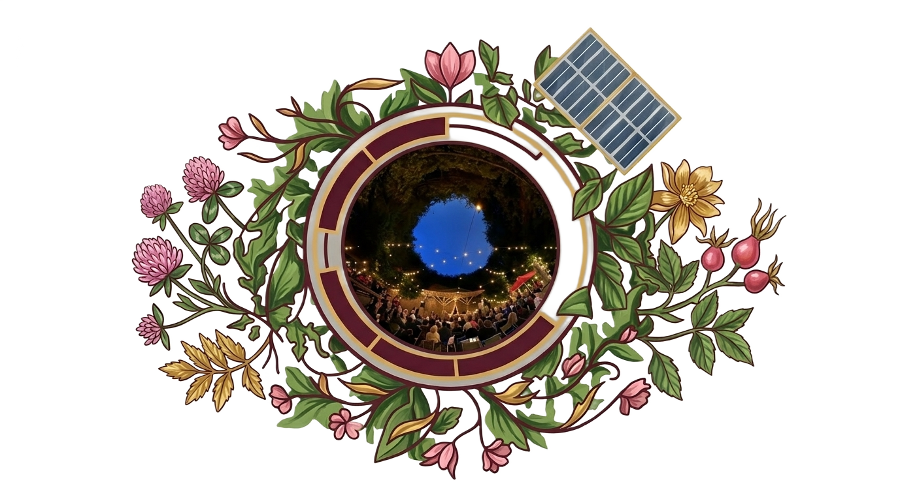
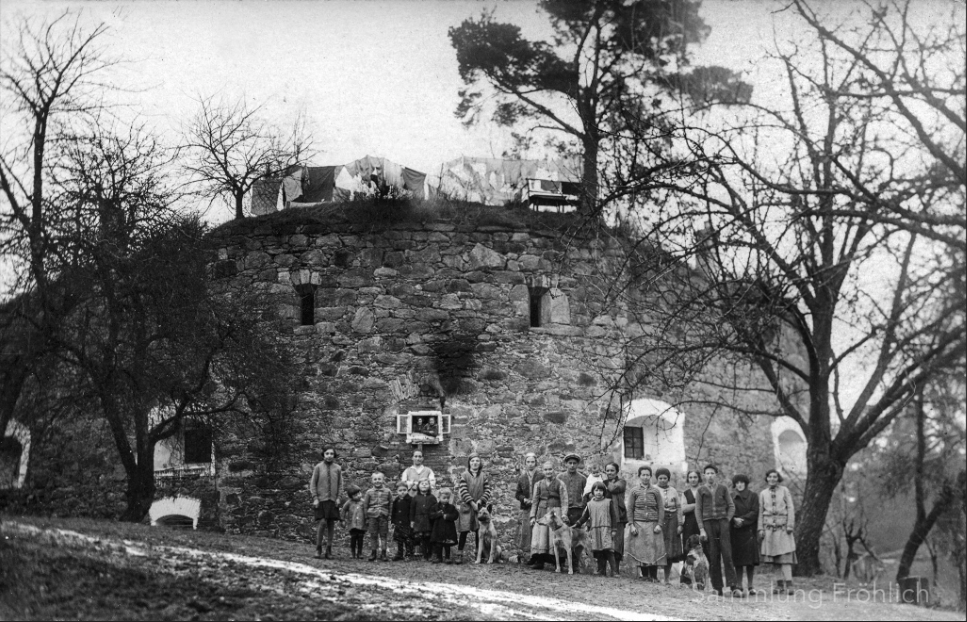

Einlass: 18:30 Uhr
Beginn 19:30 Uhr

Der Turm 20 ist ein einzigartiger Theater- und Kulturverein in Linz, der am Fuße des Pöstlingbergs beheimatet ist. Wir bieten ein vielfältiges Programm an Theateraufführungen, Konzerten und kulturellen Veranstaltungen in einer historischen und charmanten Atmosphäre.
Der Parkplatz beim Petrinum liegt einige Gehminuten vom Turm 20 entfernt (ca. 11 Minuten). Nehmen Sie entweder diesen wunderschönen Weg zu Fuß in Angriff und genießen Sie die schöne Natur oder nutzen Sie an den Theaterabenden unseren Shuttle-Service der ab 18:30 Uhr zwischen Parkplatz und Turm 20 pendelt. WICHTIG: der Shuttle-Service fährt nur bis 19:30 Uhr, nach der Vorführung gelangt man nur zu Fuß retour zum Parkplatz. Sollten Sie aus gesundheitlichen Gründen den Weg nicht bestreiten können, geben Sie uns gerne unter „office@sommertheaterlinz.at“ Bescheid und wir helfen gerne weiter. Die Veranstaltung findet bei jeder Wetterlage statt. Bitte entsprechende Kleidung und Schuhwerk mitbringen.
Der Turm 20 befindet sich in malerischer Lage am Fuße des Pöstlingbergs in Linz.
Adresse:
Kreuzweg 42
4040 Linz

Linz AG
Traussner Bau

Brillinger

ARS
Linz Kultur

SECA

Sunny Hill Ranch

Oberbank

Sinzinger
Unterstützen Sie unsere Kulturarbeit
Als gemeinnütziger Verein sind wir auf die Unterstützung unserer Freunde und Gönner angewiesen. Mit Ihrer Spende helfen Sie uns, qualitativ hochwertige Kulturveranstaltungen für die Öffentlichkeit zu ermöglichen und den kulturellen Reichtum unserer Region zu fördern.
Turm 20 – Theater- und Kulturverein
Jägerstrasse 5/8
4040 Linz
E-Mail: office@sommertheaterlinz.at
Facebook: Turm 20 – Theater- und Kulturverein
Instagram: @turm20.theater
IBAN: AT092032032100632459
 Instagram.png)